This is a custom extract of the icons from the GNOME icon theme.
Please read the documentation carefully for best image quality.
Respect the copyright and license which is in the doc doc directory.
 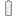
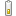
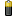
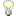
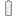
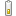
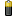
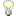

 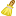
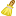

 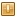
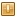
 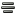
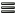
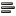
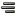
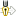
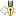
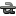
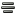
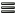
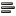
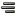
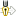
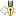
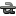
 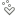
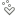


 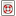
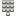
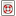
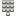


 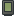
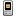
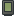
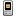

 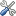
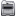
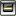
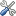
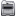
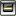


 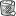
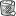
 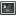
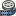
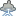
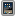
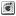
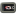
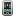
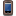
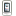
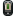
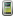
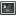
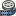
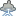
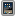
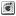
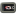
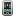
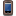
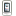
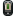
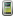
 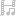
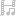
 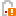
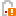

 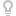
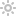
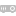
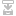
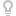
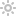
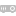
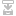

 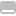
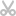
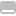
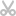


 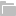
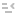
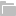
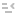
 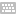
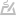
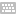
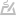
 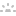
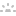

 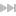
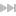